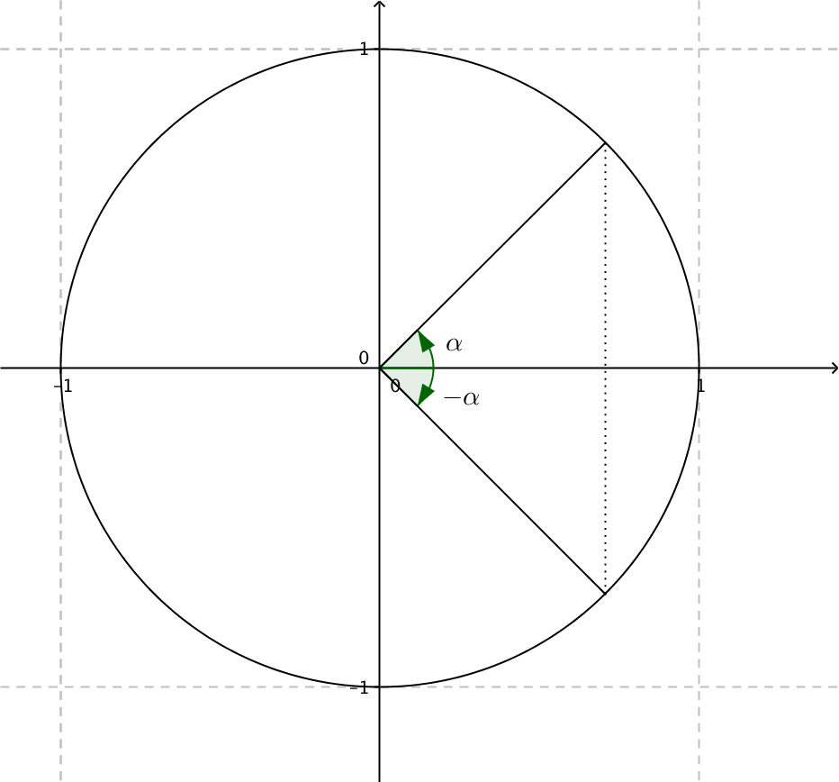
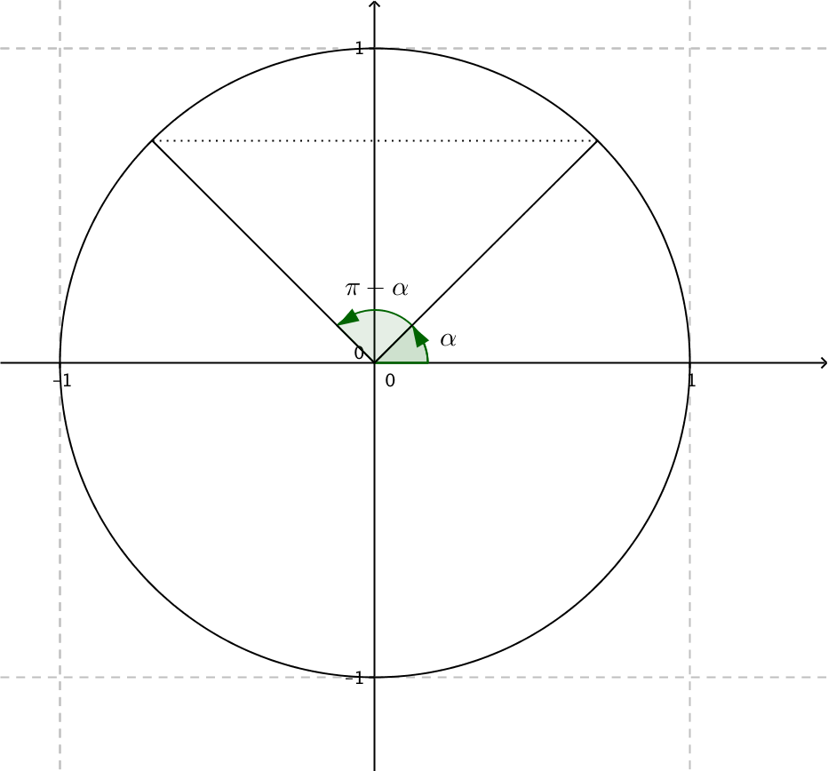
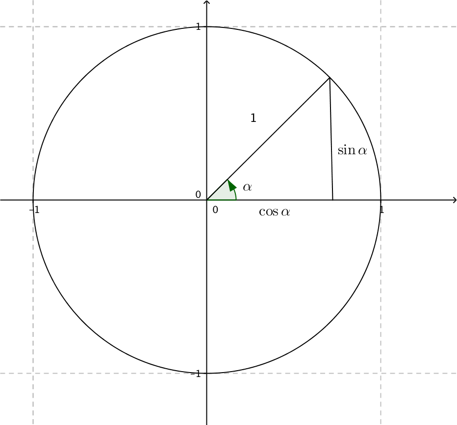
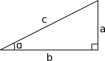

3. Egenskaper för sinus och cosinus
Du kanske märkte från föregående kapitel att det finns en hel del symmetri med sinus och cosinus.
Då vi speglar vinklarna genom x-axeln och y-axeln får vi följande symmetri. Då vi speglar vinkeln \( \alpha \) genom x-axeln får vi vinkeln \( -\alpha \). X-koordinaterna för punkten på enhetscirkeln är samma, för y-koordinaterna gäller det att de är motsatta. Vi får följande samband
- \( \cos \alpha = \cos(-\alpha) \)
- \( \sin \alpha = -\sin(-\alpha) \)

Då vi speglar mot y-axeln får vi vinklarna \( \alpha \) och\( 180^{\circ} - \alpha = \pi-\alpha \). Ny hålls y-koordinaterna samma medan x-koordinaterna blir motsatta. Vi får följande samband
- \( \cos \alpha = -\cos(\pi - \alpha) \)
- \( \sin \alpha = \sin(\pi- \alpha) \)

Lösning
Räknaren ger oss att en vinkel är \( 41,4^{\circ} \). Förutom den ena vinkeln på \( 41,4^{\circ} \) har vi en ny varje varv, \( 360^{\circ} \), senare och en ny ett varv efter det. Vi kan skriva dessa lösningar som \( 41,4^{\circ} + n \cdot 360^{\circ} \) där n är ett heltal, \( n \in \mathbb{Z} \).
Dessutom har vi vinkeln som uppstår då vi speglar mot x-axeln, \( -41,4^{\circ} \). För dessa vinklar gäller samma, det finns oändligt många som kommer varje helt varv \( 360^{\circ} \). Dessa lösningar kan vi skriva som \( -41,4^{\circ} + n \cdot 360^{\circ} \) där n är ett heltal, \( = \in \mathbb{Z} \).
Lösning
Räknaren ger oss att en vinkel är \( 40,5^{\circ} \). Förutom att vid vinkeln som är \( 40,5^{\circ} \) så har vi oändligt många lösningar som kommer varje helt varv. Vi skriver lösningarna som \( 40,5^{\circ} + n\cdot 360^{\circ} \) där n är ett heltal.
Dessutom har vi vinklar som får värdet 0,65 då vi speglar genom y-axeln. De är av storleken \( 180^{\circ} - 40,5^{\circ} = 139,5^{\circ} \). Även dessa vinklar uppkommer varje varv, \( 360^{\circ} \). Dessa lösningar skriver vi som \( 139,5^{\circ}+n\cdot 360^{\circ} \) där n är ett heltal.
Eftersom vi behandlar \( \cos \alpha \) och \( \sin \alpha \) som koordinater i en rätvinklig triangel får vi följande samband.

Längden på kateterna i triangeln är \( \mid \cos\alpha \mid \) och \( \mid \sin\alpha \mid \). Hypotenusans längd är 1. Vi utnyttjar Pythagoras sats. \( \mid \cos\alpha \mid^2 + \mid \sin\alpha \mid^2 = 1^2 \). \( (\cos\alpha)^2 \) skriver vi som \( \cos^2\alpha \).
Vi får alltså att \( \sin^2\alpha+\cos^2\alpha =1 \).
Exempel 3 Låt \( \sin \alpha = \dfrac{2}{3} \). Bestäm \( \cos \alpha \) då \( 0 \lt \alpha \lt \dfrac{\pi}{2} \).
Lösning
Vi utgår från \( \sin^2 \alpha + \cos^2 \alpha = 1 \) och skriver den som \( \cos \alpha = \pm\sqrt{1-\sin^2 \alpha} \).
Eftersom \( 0 \lt \alpha \lt \dfrac{\pi}{2} \) så är \( \cos \gt 0 \).
Vi får att \( \cos \alpha = \sqrt{1-\sin^2 \alpha} = \sqrt{1-(\dfrac{2}{3})^2} = \sqrt{\dfrac{5}{9}} = \dfrac{\sqrt{5}}{3} \).
Egenskaper för sinus och cosinus är följande:
\( \cos \alpha = \cos(-\alpha) = -\cos(\pi - \alpha) \)
\( \sin \alpha = -\sin(-\alpha) = \sin(\pi- \alpha) \)
Dessutom har vi följande samband \( \sin^2\alpha+\cos^2\alpha =1 \).
Vidare får vi följande samband mellan sinus och cosinus.
I en rätvinklig triangel gäller det att den tredje vinkeln, \( \beta \), är \( 90^{\circ} - \alpha \), eller \(\dfrac{\pi}{2} - \alpha \).

Vi får att \( \sin \alpha = \dfrac{a}{c} \) och att \( \cos (\dfrac{\pi}{2}-\alpha) = \dfrac{a}{c} \).
Alltså är \( \sin \alpha = \cos (\dfrac{\pi}{2}-\alpha) \).
Då vi jobbar med cosinus får vi först att \( \cos \alpha = \dfrac{b}{c}\) och att \( \sin(\dfrac{\pi}{2}-\alpha) = \dfrac{b}{c} \).
Alltså är \( \cos \alpha = \sin(\dfrac{\pi}{2}-\alpha) \).
Sambandet mellan sinus och cosinus är
\( \sin \alpha = \cos (\dfrac{\pi}{2}-\alpha) \)
\( \cos \alpha = \sin(\dfrac{\pi}{2}-\alpha) \)
Exempel 4 Förenkla följande uttryck.
- \( \dfrac{\cos 75^{\circ}}{\sin 165^{\circ}} \)
- \( \sin \dfrac{11\pi}{14} -\cos \dfrac{2\pi}{7} \)
Lösning
Vi får
\( \begin{array}{rcll} \dfrac{\cos 75^{\circ}}{\sin 165^{\circ}} & & & \mid \cos \alpha = \sin (90^{\circ} - \alpha) \\ & = & \dfrac{\sin (90^{\circ}-75^{\circ})}{\sin 165^{\circ}} \\ & = & \dfrac{\sin 15^{\circ}}{\sin (180^{\circ}-15^{\circ})} & \mid \sin (180^{\circ} -\alpha) = \sin \alpha \\ & = & \dfrac{\sin 15^{\circ}}{\sin 15^{\circ}} \\ & = & 1 \\ \end{array} \)
Vi får
\( \begin{array}{rcll} \sin \dfrac{11\pi}{14} -\cos \dfrac{2\pi}{7} & = & & \mid \sin \alpha = \cos(\dfrac{\pi}{2} - \alpha) \\ & = & \cos(\dfrac{\pi}{2} - \dfrac{11\pi}{14}) - \cos \dfrac{2\pi}{7} \\ & = & \cos \dfrac{7\pi -11\pi}{14} - \cos \dfrac{2\pi}{7} \\ & = & \cos (-\dfrac{4\pi}{14}) - \cos \dfrac{2\pi}{7} & \mid \cos \alpha = \cos(-\alpha) \\ & = & \cos \dfrac{2\pi}{7} - \cos \dfrac{2\pi}{7} \\ & = & 0 \\ \end{array} \)
Uppgifter
- Skriv av tabellen i ditt häfte och välj rätt värde för sinus och cosinus för vinklarna.
Påstående -1 0 1 \( \sin 0 \) \( \cos 0 \) \( \sin \dfrac{\pi}{2} \) \( \cos \dfrac{\pi}{2} \) \( \sin \pi \) \( \cos \pi \) \( \sin \dfrac{3\pi}{2} \) \( \cos \dfrac{3\pi}{2} \) \( \sin 2\pi \) \( \cos 2\pi \) \( \sin 3\pi \) \( \cos 3\pi \) Påstående -1 0 1 \( \sin 0 \) \( \cos 0 \) \( \sin \dfrac{\pi}{2} \) \( \cos \dfrac{\pi}{2} \) \( \sin \pi \) \( \cos \pi \) \( \sin \dfrac{3\pi}{2} \) \( \cos \dfrac{3\pi}{2} \) \( \sin 2\pi \) \( \cos 2\pi \) \( \sin 3\pi \) \( \cos 3\pi \) - Bestäm vinkeln för följande periferipunkter (0,1), (-1,0) och \( (\dfrac{1}{\sqrt{2}},\dfrac{1}{\sqrt{2}}) \).
\( \dfrac{\pi}{2} \) plus perioden \( 2\pi \), \( \pi \) plus perioden \( 2\pi \) och \( \dfrac{\pi}{4} + n\cdot 2\pi \).
- För vilka värden på \( \alpha \) gäller att \( \sin \alpha = 1 \)?
Tabellbok, eller räknare, ger oss att \( \alpha = \dfrac{\pi}{2} \). Dessa lösningar uppstår varje helt varv i enhetscirkeln. Alltså \( \alpha = \dfrac{\pi}{2} +n \cdot 2\pi, n \in \mathbb{Z} \).
- Bestäm de vinklar som uppfyller ekvationen \( \cos \alpha +1=0 \) då \( 0 \lt \alpha \lt 2\pi \).
Vi har att \( \cos \alpha = -1 \). En av de vinklar som uppfyller villkoret är \( \alpha = \pi \). Eftersom vi är i intervallet \( 0 \lt \alpha \lt 2\pi \) så är den enda lösningen \( \pi \).
- Förenkla följande uträkningar utan räknare.
- \( \dfrac{\cos \dfrac{\pi}{6}}{\cos \dfrac{5\pi}{6}} \)
Vi får
\( \begin{array}{rcll} \dfrac{\cos \dfrac{\pi}{6}}{\cos \dfrac{5\pi}{6}} & = & \dfrac{-\cos (\pi-\dfrac{\pi}{6})}{\cos \dfrac{5\pi}{6}} & \mid \cos \alpha = -\cos(\pi-\alpha) \\ & = & \dfrac{-\cos \dfrac{5\pi}{6}}{\cos \dfrac{5\pi}{6}} \\ & = & -1 \\ \end{array} \)
- \( \dfrac{\sin \dfrac{\pi}{3}}{\sin (-\dfrac{\pi}{3})} \)
Vi får
\( \begin{array}{rcll} \dfrac{\sin \dfrac{\pi}{3}}{\sin (-\dfrac{\pi}{3})} & = & \dfrac{\sin \dfrac{\pi}{3}}{-\sin \dfrac{\pi}{3}} & \mid \sin(-\alpha) = -\sin \alpha \\ & = & -1 \\ \end{array} \)
- \( \dfrac{\sin 10^{\circ}}{\cos 80^{\circ}} \)
Vi får
\( \begin{array}{rcll} \dfrac{\sin 10^{\circ}}{\cos 80^{\circ}} & = & \dfrac{\cos (90^{\circ}-10^{\circ})}{\cos 80^{\circ}} & \mid \sin \alpha = \cos (90^{\circ}-\alpha) \\ & = & \dfrac{\cos 80^{\circ}}{\cos 80^{\circ}} \\ & = & 1 \\ \end{array} \)
Vi kan också utnyttja att \( \cos \alpha = \sin (90^{\circ}-\alpha) \). Vi får lite andra uträkningar, men samma resultat.
- \( \dfrac{2\sin \dfrac{3\pi}{5}}{\cos \dfrac{\pi}{10}} \)
Vi får
\( \begin{array}{rcll} \dfrac{2\sin \dfrac{3\pi}{5}}{\cos \dfrac{\pi}{10}} & = & \dfrac{2\sin \dfrac{3\pi}{5}}{\sin (\dfrac{\pi}{2}-\dfrac{\pi}{10})} & \mid \cos \alpha = \sin (90^{\circ}-\alpha) \\ & = & \dfrac{2\sin \dfrac{3\pi}{5}}{\sin \dfrac{2\pi}{5}} & \mid \sin \alpha = \sin(\pi -\alpha)\\ & = & \dfrac{2\sin \dfrac{3\pi}{5}}{\sin (\pi - \dfrac{2\pi}{5})} \\ & = & \dfrac{2\sin \dfrac{3\pi}{5}}{\sin (- \dfrac{3\pi}{5})} & \mid \sin(-\alpha) = -\sin \alpha \\ & = & \dfrac{2\sin \dfrac{3\pi}{5}}{-\sin \dfrac{3\pi}{5}} \\ & = & \dfrac{2}{-1} = -2 \\ \end{array} \)
Vi kan också utnyttja att \( \sin \alpha = \cos (90^{\circ}-\alpha) \). Vi får lite andra uträkningar, men samma resultat.
- \( \dfrac{\cos \dfrac{\pi}{6}}{\cos \dfrac{5\pi}{6}} \)
- Förenkla följande uträkningar utan räknare.
- \( \dfrac{\sin 125^{\circ}}{\cos 35^{\circ}} \)
Vi får
\( \begin{array}{rcll} \dfrac{\sin 125^{\circ}}{\cos 35^{\circ}} & = & \dfrac{\cos (90^{\circ}-125^{\circ})}{\cos 35^{\circ}} & \mid \sin \alpha = \cos(90^{\circ}-\alpha)\\ & = & \dfrac{\cos (-35^{\circ})}{\cos 35^{\circ}} & \mid \cos(-\alpha) = -\cos \alpha \\ & = & -\dfrac{\cos 35^{\circ}}{\cos 35^{\circ}} \\ & = & -1 \\ \end{array} \)
Vi kan också utnyttja att \( \cos \alpha = \sin (90^{\circ}-\alpha) \). Vi får lite andra uträkningar, men samma resultat.
- \( \dfrac{\sin \dfrac{7\pi}{3}}{\cos \dfrac{\pi}{6}} \)
Vi får
\( \begin{array}{rcll} \dfrac{\sin \dfrac{7\pi}{3}}{\cos \dfrac{\pi}{6}} & = & \dfrac{\sin \dfrac{6\pi + \pi }{3}}{\cos \dfrac{\pi}{6}} = \dfrac{\sin 2\pi + \dfrac{\pi}{3}}{\cos \dfrac{\pi}{6}} \\ & = & \dfrac{\sin \dfrac{\pi}{3}}{\cos \dfrac{\pi}{6}} & \mid \sin(2\pi \alpha) = \sin \alpha \\ & = & \dfrac{\sin \dfrac{\pi}{3}}{\sin (\dfrac{\pi}{2}-\dfrac{\pi}{6})} & \mid \cos \alpha = \sin(\dfrac{\pi}{2}-\alpha) \\ & = & \dfrac{\sin \dfrac{\pi}{3}}{\sin \dfrac{\pi}{3}} \\ & = & 1 \\ \end{array} \)
Vi kan också utnyttja att \( \sin \alpha = \cos (90^{\circ}-\alpha) \). Vi får lite andra uträkningar, men samma resultat.
- \( \dfrac{\cos(5\pi) -\sin \dfrac{17\pi}{2}}{\cos 19\pi} \)
Vi får
\( \begin{array}{rcll} \dfrac{\cos(5\pi) -\sin \dfrac{17\pi}{2}}{\cos 19\pi} & = & \dfrac{\cos(5\pi) -\cos (\dfrac{\pi}{2}-\dfrac{17\pi}{2})}{\cos 19\pi} & \mid \sin \alpha = \cos (\dfrac{\pi}{2}-\alpha) \\ & = & \dfrac{\cos(5\pi) -\cos \dfrac{-16\pi}{2}}{\cos 19\pi} \\ & = & \dfrac{\cos(5\pi) -\cos (-8\pi)}{\cos 19\pi} & \mid \cos \alpha = \cos(2\pi\alpha) = \cos(4\pi\alpha) = \ldots \\ & = & \dfrac{\cos\pi -\cos 0}{\cos \pi} \\ & = & \dfrac{\cos\pi}{\cos \pi} \\ & = & 1 \\ \end{array} \)
- \( \sin(\dfrac{9\pi}{2}-\alpha) + 2\cos \alpha \)
Vi får
\( \begin{array}{rcll} \sin(\dfrac{9\pi}{2}-\alpha) + 2\cos \alpha & = & \cos(\dfrac{\pi}{2}-(\dfrac{9\pi}{2}-\alpha)) + 2\cos \alpha & \mid \sin \alpha = \cos (\dfrac{\pi}{2} - \alpha) \\ & = & \cos(-4\pi +\alpha) + 2\cos \alpha & \mid \cos(4\pi +\alpha ) = \cos \alpha \\ & = & \cos \alpha + 2\cos \alpha \\ & = & 3\cos \alpha \\ \end{array} \)
- \( \dfrac{\sin 125^{\circ}}{\cos 35^{\circ}} \)
- Bestäm exakt värde av \( \sin \alpha \) då \( \cos \alpha = -\dfrac{3}{4} \) och \( \dfrac{\pi}{2} \lt \alpha \lt \pi \).
Vi har att \( \sin \alpha = \pm\sqrt{1-\cos^2\alpha} \). Eftersom \( \dfrac{\pi}{2} \lt \alpha \lt \pi \) så är \( \sin \alpha \gt 0 \). Alltså \( \sin \alpha = \sqrt{1-\cos^2\alpha} = \sqrt{1-(-\dfrac{3}{4})^2} = \sqrt{\dfrac{7}{16}} =\dfrac{\sqrt{7}}{4} \).
- Bestäm exakt värde av \( \cos \alpha \) då \( \sin \alpha = \dfrac{2}{5} \) och \( 0 \lt \alpha \lt \dfrac{\pi}{2} \).
Vi har att \( \cos \alpha = \pm\sqrt{1-\sin^2\alpha} \). Eftersom \( 0 \lt \alpha \lt \dfrac{\pi}{2} \) så är \( \cos \alpha \gt 0 \). Vi får att \( \cos \alpha = \sqrt{1-\sin^2\alpha} = \sqrt{1-(\dfrac{2}{5})^2} = \sqrt{\dfrac{21}{25}} =\dfrac{\sqrt{21}}{5} \).
- Bestäm exakt värde av \( \sin \alpha \) då \( \cos\alpha = \dfrac{1}{2} \) och \( \dfrac{3\pi}{2} \lt \alpha \lt 2\pi \).
Vi har att \( \sin \alpha = \pm\sqrt{1-\cos^2\alpha} \). Eftersom \( \dfrac{3\pi}{2} \lt \alpha \lt 2\pi \) så är \( \sin \alpha \lt 0 \). Vi får att \( \sin \alpha = -\sqrt{1-\cos^2\alpha} = -\sqrt{1-(\dfrac{1}{2})^2} = -\sqrt{\dfrac{3}{4}} = -\dfrac{\sqrt{3}}{2} \).
- Bestäm exakt värde av \( \cos \alpha \) då \( \sin\alpha = -\dfrac{1}{\sqrt{2}} \) och \( \pi \lt \alpha \lt \dfrac{3\pi}{2} \).
Vi har att \( \cos \alpha = \pm\sqrt{1-\sin^2\alpha} \). Eftersom \( \pi \lt \alpha \lt \dfrac{3\pi}{2} \) så är \( \cos \alpha \lt 0 \)Vi får att \( \cos \alpha = -\sqrt{1-\sin^2\alpha} = -\sqrt{1-(-\dfrac{1}{\sqrt{2}})^2} = -\sqrt{\dfrac{1}{2}} = -\dfrac{1}{\sqrt{2}} \).
- Lös ekvationen \( \sin \alpha \cos \alpha =0 \).
Nollregeln ger:
\( \begin{array}{rclcrcl} \cos \alpha &=&0 &\text{ eller } &\sin \alpha &=&0 \\ \alpha &=& \dfrac{\pi}{2} + n \cdot \pi & \text{ eller } & \alpha &=& n\cdot \pi, n \in \mathbb{ Z} \\ \end{array} \)
Som vi kan skriva som \( \alpha = n\cdot\dfrac{\pi}{2}, n \in \mathbb{Z} \).
- För vilket värde på konstanten n har vinkeln \( \alpha + n\cdot\dfrac{\pi}{2} \) och \( \alpha \) samma periferipunkt?
Ett av livets stora mysterier. Är det 42?